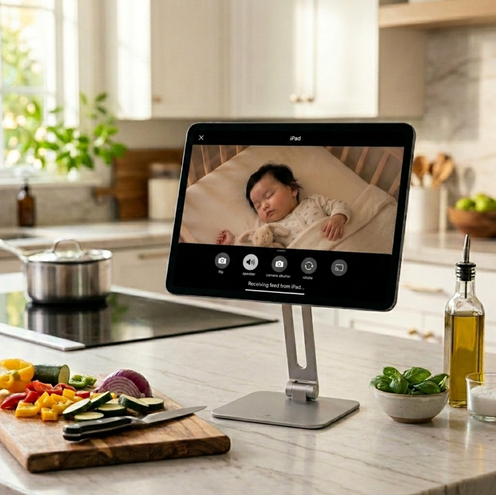
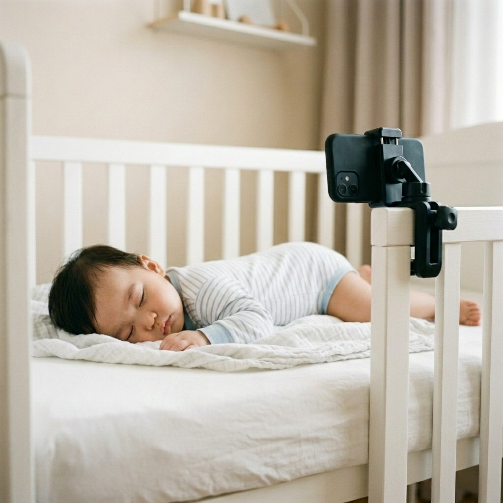

Effortlessly transform any spare phone or tablet into a private, dedicated video baby monitor. Work, cook, or relax in another room while staying connected to your little one.


Everything you need to keep a watchful eye on your baby, built with privacy and simplicity at its core.
Attend Zoom calls or handle chores while keeping a continuous live window on your baby sleeping or playing in their crib.
Unlike cloud cameras that upload streams to third-party servers, JoJo Cam streams strictly peer-to-peer over your local home Wi-Fi.
Don't spend $100–$300 on specialized hardware. Turn any unused iPhone, iPad, or Android phone into a dedicated nursery camera.
No account creation, no password setup, and no email verification required. Just scan a QR code and start streaming in seconds.
Zoom in remotely to check if your baby's eyes are open, toggle the flashlight gently, or switch front/rear cameras from your phone.
Streams entirely within your local Wi-Fi network (LAN), using 0MB of your cellular data or home internet plan bandwidth.
No complex network configuration or router port-forwarding needed.
Mount or stand your old phone near your baby's crib or playpen, connected to home Wi-Fi.
Open JoJo Cam on your main phone and scan the setup QR code displayed on the nursery phone.
Enjoy a continuous, encrypted live feed with remote zoom and audio while working in another room.
Free yourself to work and relax while staying connected to your baby. Available on iOS and Android.